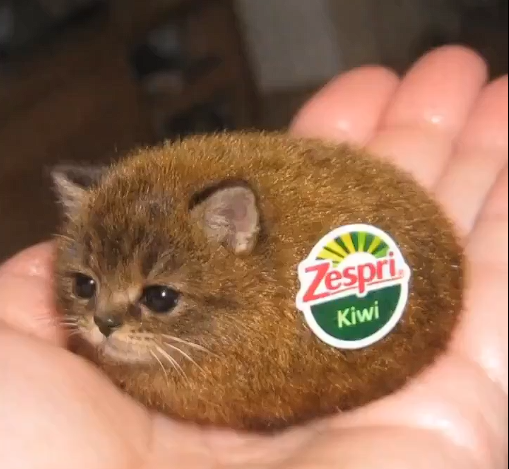

Gato Fruta

Ficha Técnica:
Nome: Gato Fruta
Nomes alternativos: Gato Fruta
Raça: Gato
Tipo da raça: Fruta
Nivel de ameaça: Nulo
Características físicas:
- Corpo em formato de alguma fruta
- Suas características físicas variam de acordo com a fruta
- Emite cheiro adocicado e agradável
Capacidades:
- Não possui capacidades relevantes
Fraquezas:
- Ele possui as mesmas características de uma fruta, sendo fisicamente muito frágil
- Ele não se move por conta própria
Como contê-lo:
Não há necessidade de contê-lo. Ele é inofensivo. Caso ele esteja em um local onde não deveria estar, apenas o remova.
Relato genérico:
Como há muitos relatos de Gatos Frutas, selecionamos o relato mais comum:
"O Gato Kiwi é uma anomalia biológica que se assemelha a um gato, mas com características de uma fruta. Ele é inofensivo e não representa ameaça para os humanos."
- Relato Genérico
História:
Clique aqui para ver a história do Gato Fruta.